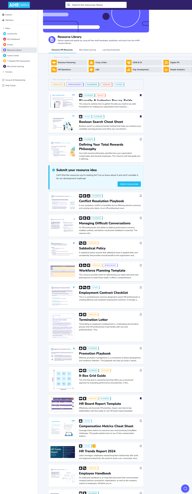
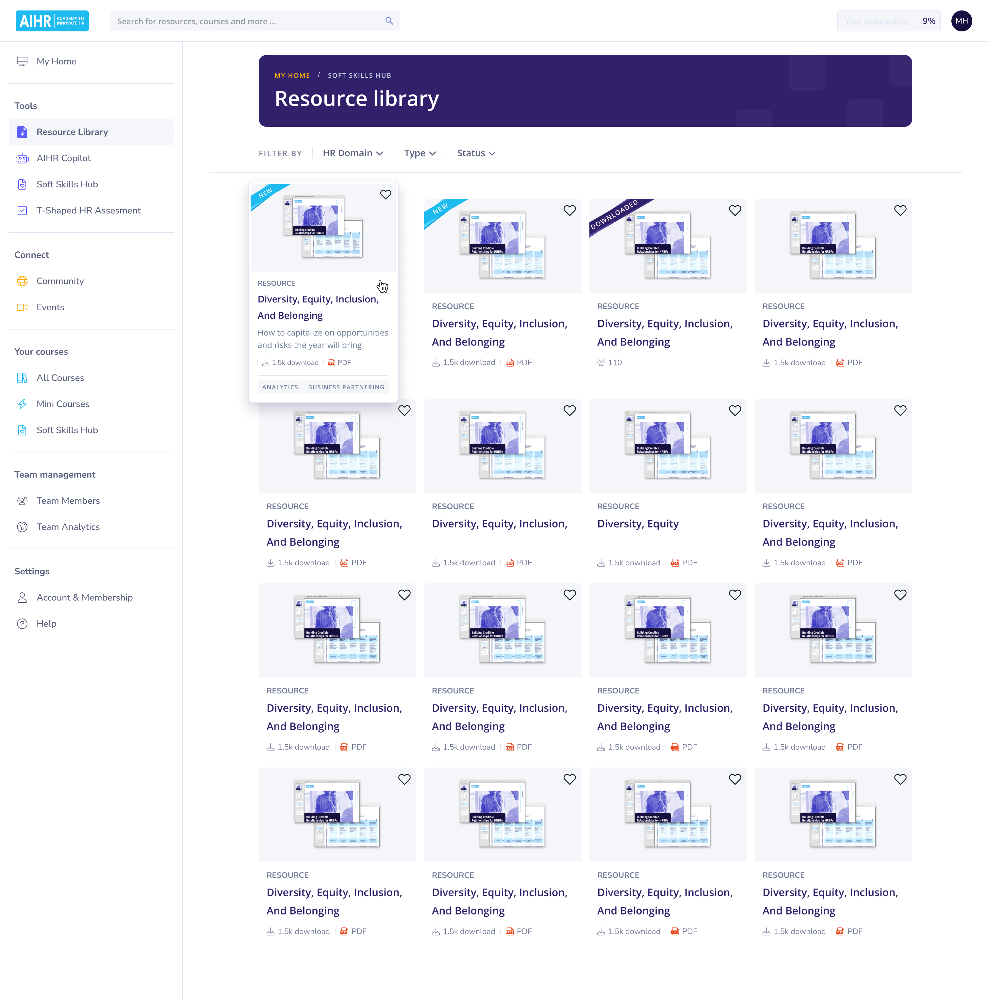
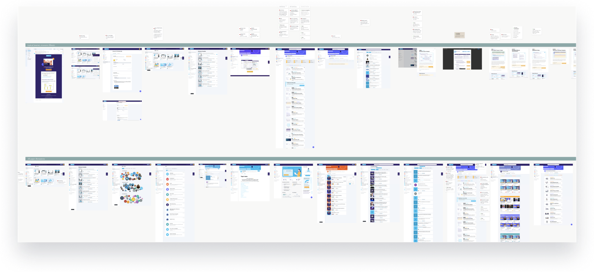
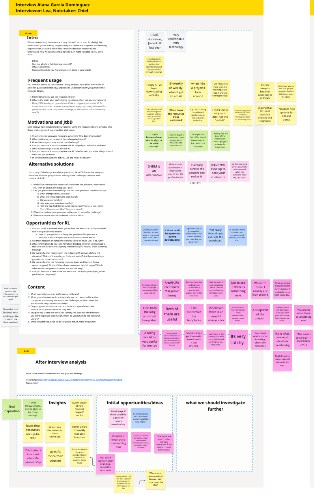
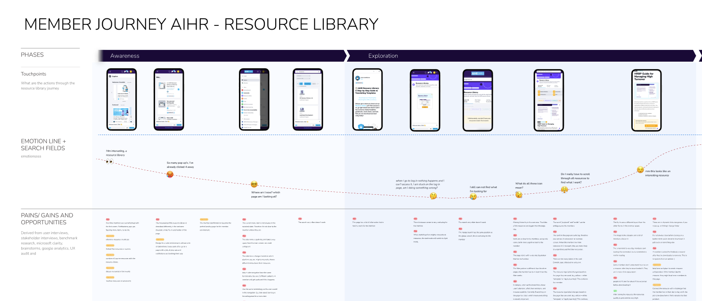
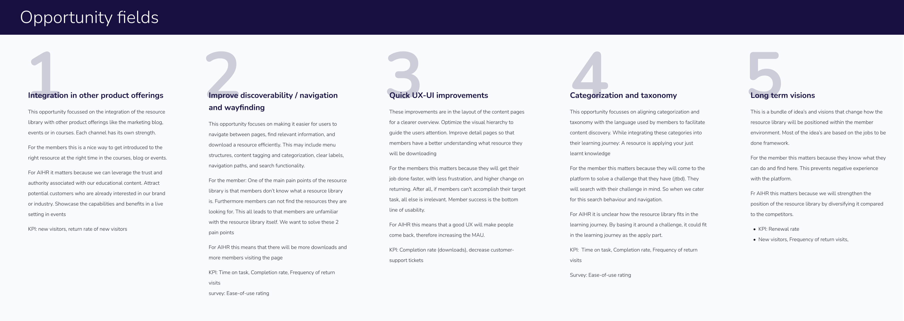
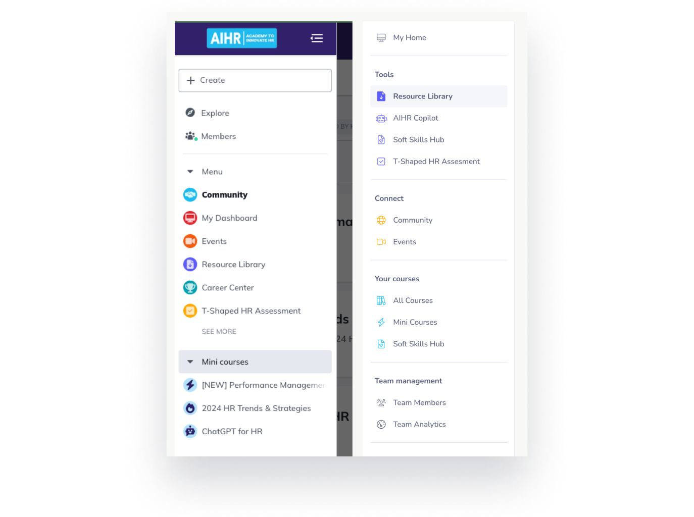
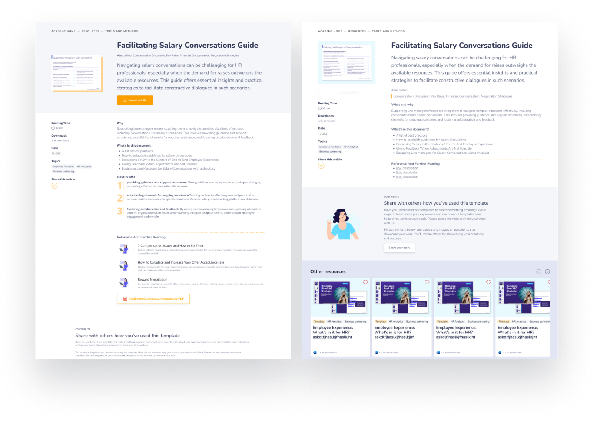
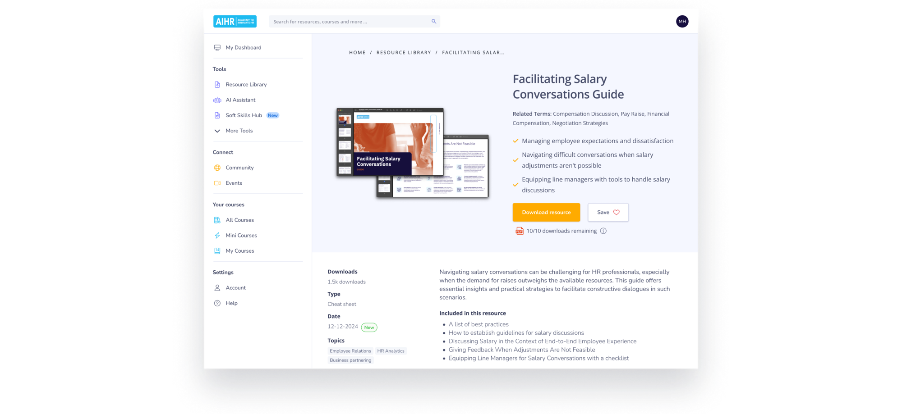
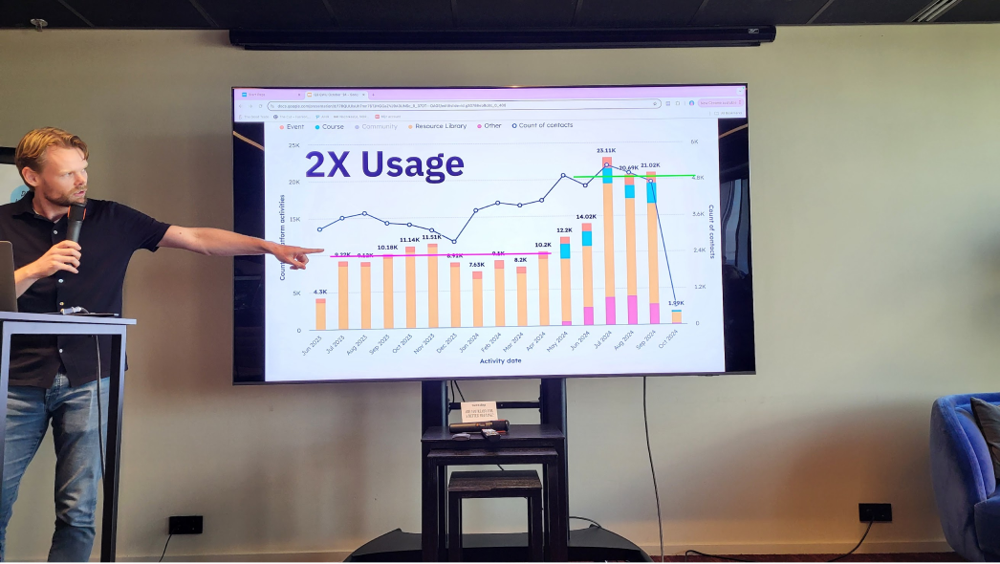

From a hidden gem to the platform's most visited feature, doubling monthly usage in 5 months.
Timeline: 5 months project
My role: Service / UX designer & project manager.
Team: Product marketing, content, VP of product & engineering.


Before (left) and after (right) — the redesigned resource library overview page
The resource library was one of the main reasons people renewed their subscription, yet only 36% of total members ever interacted with it. A clear missed opportunity.
The design challenge: How would you make the Resource Library more valuable? Which feature would you add?
Beyond feature design, we had two KPIs: increase resource library adoption and increase overall platform activities per month. The more people interact with the platform, the more reason they have to renew.

A snapshot of the UX audit — 38 screens analysed across the full platform
The project ran across three phases of four weeks each — discover, define, and deliver. All design starts with the customer, context, and business.
This was my first project at AIHR, so I started with a thorough UX audit, reviewing all 38 screens of the platform, mapping patterns, filters, styling inconsistencies, and user flows.
One of the biggest findings: the platform ran on three separate backends. Every time a user navigated between sections, the entire menu structure changed. Items disappeared, order shifted, no wonder people couldn't find the Resource Library.
I also interviewed key stakeholders across sales, CIO, content, and engineering, and conducted 5 user interviews. The biggest insight: once users discover the value of the Resource Library, they become monthly actives and don't churn. But they were landing there mostly by accident.

Interview board with insights and problem clusters

Customer journey map synthesising all research: problems, opportunities and interviews in one overview

5 opportunity fields

Before: complex, cluttered navigation with inconsistent structure across platforms.
After: a simplified, grouped navigation with clearer hierarchy and consistent labels
Navigation felt like the most urgent problem. Users told us they struggled to find the Resource Library — and the audit confirmed it. Three platforms, three menus, inconsistent ordering.
Aligning the three menus required significant coordination with all colleagues — when to release, what to cut, how to reorder. Through that process, it became clear just how fragmented the underlying platform was.
The goal was radical simplification: remove as many items as possible, so the Resource Library could actually be found.
The new menu introduced clear groupings (Tools, Connect, Your courses, Settings), simplified iconography, and a consistent structure across all three platforms.
Every item that wasn't essential was removed. The Resource Library moved to a top-level "Tools" group — immediately visible, no drilling required.
With the navigation fixed, I redesigned the resource library from the ground up. I also set up a design system — so from this point forward, the entire platform could have a consistent UI.
Key improvements:

Early sketches exploring different layouts for the resource detail panel

The redesigned resource library, cleaner cards, social proof, and an improved detail page with preview

CEO presenting 2x usage results because of the redesign
The key insight from research — that users who discover the library's value keep coming back — proved to be the right north star. By making discovery easier (navigation), comprehension better (detail page), and reach wider (emails), we unlocked latent engagement that was always there. The design system set the foundation for consistent UI going forward.